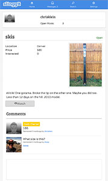
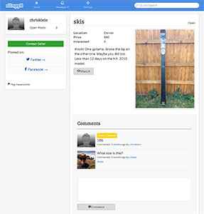

I am a UX Designer living in Denver, CO who geeks out over web standards, accessibility and mobile technology. I wear many hats including researcher, tester, front end developer, visual designer and co-founder. I can be found exploring the rocky mountains, expanding my mind on Coursera, enjoying a craft beer and relaxing with family and friends.
ResumeI am a designer who thinks in code.
Slinggit

- 
- 
- Role:
- Co-Founder, UI/UX, HTML, SASS, jQuery, Rails
- Dates:
- April 2012 - Present
- Meta:
- Responsive web app designed with emphasis on speed and low footprint. iOS user interface. http://www.slinggit.com
Pixorial
- Role:
- UI/UX, HTML, CSS/SASS, jQuery, Rails
- Dates:
- February 2012 - Present
- Meta:
- Design and Front End Development for a small startup building a cloud storage, video editing and sharing application. I do things like write/moderate usability tests, wireframe, design visual elements, build prototypes to test and write product HTML, CSS and JS.
Air Supremacy
- Role:
- UI/UX, HTML, CSS, jQuery
- Dates:
- June 2012
- Meta:
- Work with Air Supremacy to move e-commerce hosting to Big Cartel platform and design 'mobile first' custom theme.
Streamline Engineering
- Role:
- UI, HTML, CSS, jQuery
- Dates:
- December 2011
- Meta:
- Work with Dominic Aiello to brand, design and develop the web pressence for his mechanical engineering consultancy, Streamline Engineering.
SimplBrew
- Role:
- UI/UX
- Dates:
- November 2011 - Present
- Meta:
- A mobile app for iOS and web, for recreational/novice homebrewers featuring simple ingredient lists, brew tracking, calendar and timer.
Nomabi
- Role:
- UI/UX, HTML/HAML, SASS/CSS
- Dates:
- August 2012
- Meta:
- For an AT&T Mobile Hackathon in Denver our team of 6 concepted an app that would allow designers/developers to connect in physical spaces to co-work. Originally designed as a native iOS app we rapidly built a responsive web app when we ran into issues with several of the apis in iOS. Used the FullContact, MapQuest, GitHub and At&T apis.